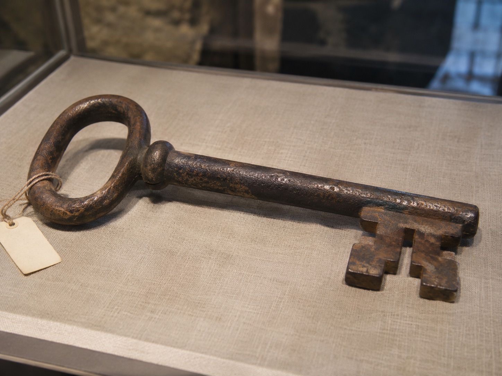

Original Front-Gate Key
Eastern State Penitentiary | Philadelphia, Pennsylvania
The Artifact
One of the objects preserved in Eastern State Penitentiary's historical collection is the key to the prison's original front gate.
According to the historic site's museum documentation, the key bears the words "Front Gate" and "ESP," along with the dates "1823-1938." These inscriptions connect the object directly to the institution's earlier entrance.

Its Story
Eastern State Penitentiary was developed during the nineteenth century as an ambitious experiment in prison reform. Its architecture and tightly regulated internal arrangements were designed to maintain control over prisoners while supporting a system of isolation and reflection.
The front gate formed the boundary between the outside world and the institution. For prisoners, employees, and visitors, passage through this entrance represented a transition into a highly controlled environment.
The original gate was replaced in 1938. Surviving components, including its key and other architectural remnants, became historical keepsakes.
The preserved key illustrates how an everyday functional object can gain significance after the structure it once operated has been altered.
Connection to the Building
Eastern State Penitentiary is recognized for its imposing exterior, radial cellblock arrangement, and influence on prison architecture.
The front-gate key connects this larger architectural history to the practical mechanisms used to control entry and movement.
Although small compared with the prison's massive walls and towers, the key symbolizes the institution's authority and the physical separation between confinement and freedom.
Sources and Image Credit
Eastern State Penitentiary Historic Site. (2018). Pop-Up Museum: Gallery Guide. Museum artifact documentation
Eastern State Penitentiary Historic Site. Official historic site